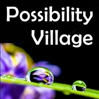
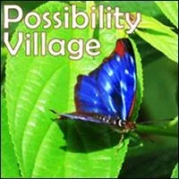

Possibility
Village
- …
Possibility
Village
- …
- Possibility Village - What is a Possibility Village? - How does it work? - How can you become a person who can make a Possibility Village for yourself and your friends? - What to be careful about? - How to get your Possibility Village off the ground? - How to make it really fly? - A Vision - Deep in your bones you may long to live in a human-scale, regenerative-culture, initiation-centered, Archiarchal village, with all 4 Archetypal Lineages activated, thriving with music and children, where women and men grow up, where love and healing happens, where you can stop fearfully battling for your life against threats of warfare, chemical contamination, corporate psychopaths, or death by rent and taxation. If you could find or build such a place you could sigh the biggest sigh of your life and know that here... Gaia has a chance. - This is a handbook for creating exactly such a Possibility Village. - This website serves as a table of contents to teams of experimenters and a cloud of websites supporting you step-by-step to become a source person and spaceholder in your Possibility Village Circle. - Each person has value to provide in the - Circle. What are your jobs? How can you prepare yourself? How can you materialize your Possibility Village in reality? This is where we are going. The door is open.- No one can build your Possibility Village for you. - More interestingly, no one can stop you from building it. - The rest is up to you.
- Preparing Yourself - You are right. You can never prepare yourself enough. You can never be fully prepared to face and transform every problem or conflict that might arise while you are creating or navigating a living Possibility Village. But you CAN consistently stand in the recognition that you are continually preparing yourself, and from there you can take each challenge as the precise workout Dojo for preparing yourself further. - NOTE: A Possibility Village cannot exist in the capitalist, patriarchal empire of modern culture. Nor can a Possibility Village exist in the undistinguished matriarchies of yesteryear. Each Possibility Village emerges in its uniqueness from the context of next culture - the culture of - Archiarchy- the culture naturally emerging now that- Matriarchy and Patriarchyhave run their course.- It is as large a shift for a modern culture person to begin living in Archiarchy as it would be for a stone-age Matriarchy person to start living in modern culture Patriarchy. Every single way of life in modern culture falls away into the fire of transformation and gets reinvented in its - Phoenix-style reinventionto become Archiarchy... or else you build up modern culture again painted green. So it is okay to not know.- In fact, it is a requirement to not know, in the beginning and for a long time thereafter. We do not know how building next culture will go. We only know that - not knowingis the way to go to build next culture. Not knowing is the compass. We human beings are starting over at a new place with a new awareness and a new level of responsibility that is inescapable. There are hardly any laws in Archiarchy. What there are, are- Distinctions. Distinctions in the context of next culture apply more absolutely than laws in modern culture, because in Archiarchy there are no lawyers. Even figuring out how to prepare yourself to create a Possibility Village must be improvised based on minute observations about what works and what does not work in the Archiarchal context of- Radical Responsibility. How will you know when you are ready to begin? Ahhh, now that question is easy to answer: You have already begun!- Please remember that the global population of - Cultural Creativeshas lept from an estimated 50 million in the year 2000 to over 300 million people now, and with- Extinction Rebellionand- Fridays For Futurethis number is rapidly growing. You are not alone. When you- Take A Standfor creating a Possibility Village it gives others the clarity and possibility for doing the same.- What we Cultural Creatives mainly lack is - Possibility Village Thoughtware Design. There are plenty of hardware design options to choose from to build regenerative villages: from Earthships to biogas generators to composting toilets to permaculture gardens. Hardware is not the bottleneck. Where projects break down and fall apart is through using outdated- Thoughtwarein human interactions and collaborations.- This website and the - associated cloud of websitesand projects provide abundant resources for you to upgrade to Archiarchal- gameworld designs. You may not have a sense of what this terminology means right now, but as you come to understand, your Thoughtware will be upgrading in exactly the directions that empower you to design and share even more useful Archiarchal Thoughtware design upgrades. In this way we all work as a Team. Nobody has everything. Everyone has something.- The rewards and risks are personal. The stakes are maximum. We hope you jump in with us and keep preparing yourself better and better.


- What's Working Best
 - StartOver.xyz - Massively-Multiplayer - Online and Offline - Personal Development - Matrix Building - Thoughtware Upgrade - Real Life - Adventure Game
- StartOver.xyz - Massively-Multiplayer - Online and Offline - Personal Development - Matrix Building - Thoughtware Upgrade - Real Life - Adventure Game 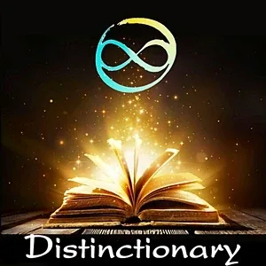


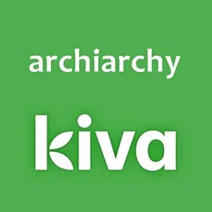
- Kiva - No Interest Micro-Loans For Women- Micro-Loans around the world - where a little bit of money can do a lot of good.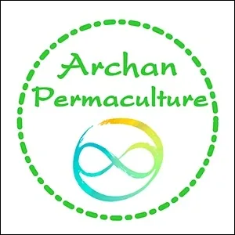
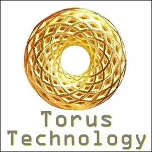
- Torus Technology - Toroidal Organizations and Processes- The Frying Pan - Poop On The Table Process - Myth Busting - M.E.S.S. Process - The Torus: Divergence and Convergence
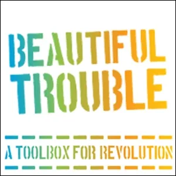


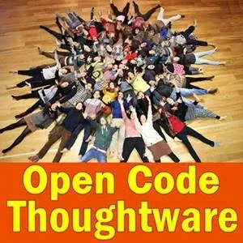
- Open Code Thoughtware - Copyleft- Open code thoughtware, copyleft, feeding the creative commons.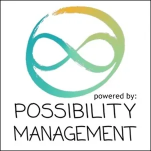

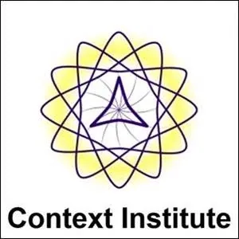
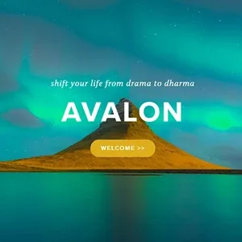
- Avalon Dharma- We invite people who work from abundance and come with a longing to explore surrendered leadership fully and have a growing curiosity to live in an expanding universe, in a space where the not knowingness unfolds itself. Healing the mind from decisions you made before you could speak.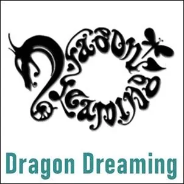
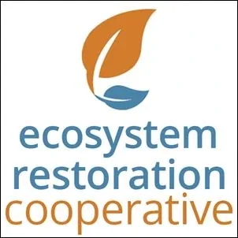

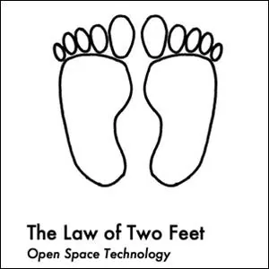
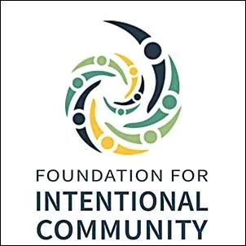
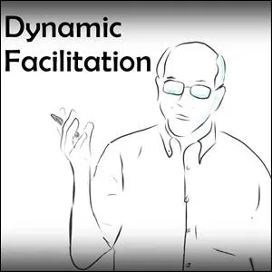
- Dynamic Facilitation - Wisdom Council- Video: (6 min) - https://www.youtube.com/watch?v=5Nc9lIXLB1s- Dynamic Facilitation and Choice Creating: - https://www.co-intelligence.org/P-dynamicfacilitation.html - What Gets In The Way
 - ### Title Text- ###### A small tagline - ### Title Text- ###### A small tagline - ### Title Text- ###### A small tagline
- ### Title Text- ###### A small tagline - ### Title Text- ###### A small tagline - ### Title Text- ###### A small tagline - Resources

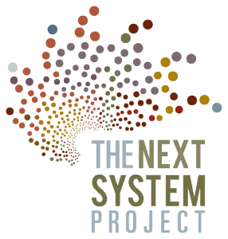


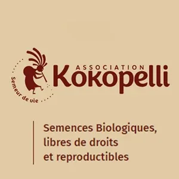


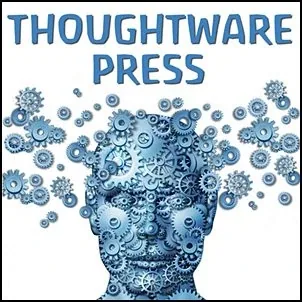


 - Green Flame - Deep Green Resistance News Service- dgrnewsservice.org
- Green Flame - Deep Green Resistance News Service- dgrnewsservice.org 

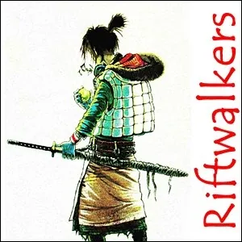
- NOTE:This website is a- Bubble in the Bubble Mapof the massively-multiplayer online-and-offline thoughtware-upgrade personal-transformation game called- StartOver.xyz. It is a- doorwayto- experimentsthat- upgrade your thoughtwareso you can- createmore- possibility. Your- knowledgeis what you think- about. Your- thoughtwareis what you use to think- with. When you- change your thoughtware, you go through a- liquid stateas your mind- reorganizesitself. Liquid states can bring up transformational- feelingsand- emotions. Please read this website- responsibly. By- upgrading your thoughtwareyou- build matrixto hold more- consciousness. No one can do this for you. No one can stop you from doing it. Our theory is that when we- collectively buildone million more Matrix Points we will change the morphogenetic field of the human race for the better. Reading this whole website is worth 1 Matrix Point. Doing any of the EXPERIMENTS earns you additional Matrix Points. Please use Matrix Code- PVILLAGE.00to log your earned Matrix Points at- http://startover.xyz. Thank you for playing full out!